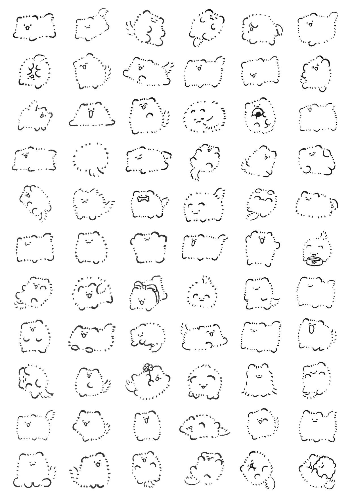

Illustration Portfolio
Works
画像をクリックで拡大 · ←→キーで前後に移動
Info
制作時間の目安
※ 内容・サイズにより変動します。これまでの平均的な目安です。
使用ソフト：ibisPaint X / After Effects / Live2D / Illustrator
Contact
ご依頼・ご連絡はメールにてお気軽にどうぞ。
他の動画はInstagramでご覧ください！